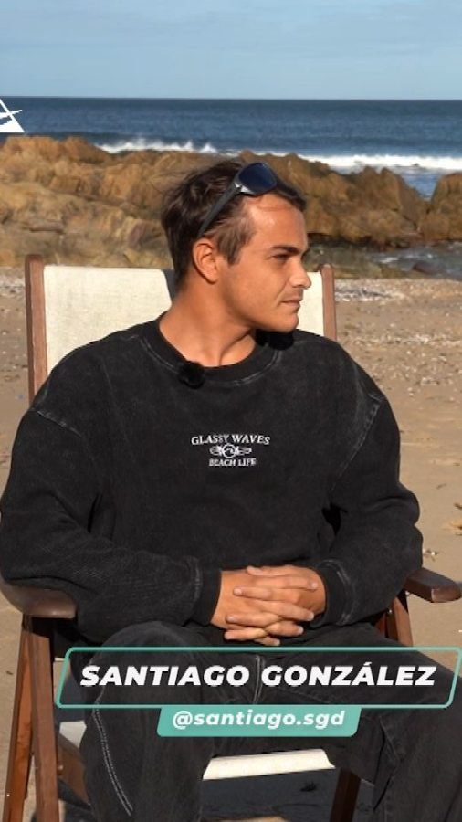
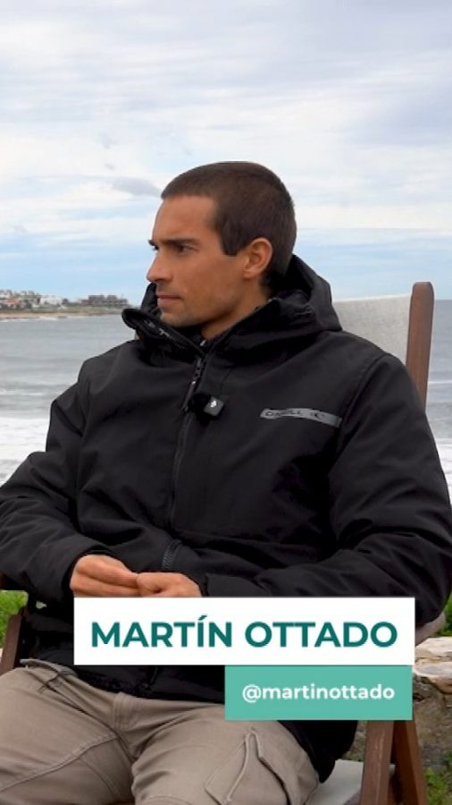

Florencia Sagasti
Conducción y producción general
Periodista, comunicadora y actriz. Vive en Punta del Este hace 12 años y conduce el magazine periodístico de Concierto Punta FM. Practica surf, skate, hockey, navegación y running.
Un programa semanal sobre surf, vela, kite, remo, skate y la gente que vive la costa uruguaya.

Por medio de noticias de actualidad, entrevistas, coberturas, cultura y medio ambiente, transmitimos el clima del Aire de Mar.
Nuestro foco son los deportistas locales, y sumamos protagonistas del deporte nacional e internacional. También contamos proyectos de la comunidad, educación y deporte en general.
Buscamos concientizar sobre la cultura deportiva, el respeto por el medio ambiente y el cuidado de las playas y los océanos.
Punta del Este. Domingos 17:30, con repetición.
Desde noviembre de 2026, para todo el país y la región.
Repetición del programa, a demanda.
Periodista, comunicadora y actriz. Vive en Punta del Este hace 12 años y conduce el magazine periodístico de Concierto Punta FM. Practica surf, skate, hockey, navegación y running.

Actor y emprendedor, con carrera en teatro, cine y audiovisual en Argentina y Uruguay. Hace surf, kitesurf, windsurf y wakeboard.

Licenciado en Letras y ex rugbier de primera en Club Hindú. Vive en Punta del Este hace más de 10 años, es profesor de rugby y surfea.
Espacio Unión de Surf del Uruguay. Junto a Octavio Francolino, surfista y comunicador de la USU, compartimos novedades, informes y coberturas de los surfistas del equipo nacional.
 Surf nacional
Surf nacional Entrevistas
Entrevistas
Entrevistas Comunidad
Comunidad
Surf nacionalUna comunidad adulta, local y que vive el mar: el 83% de nuestra audiencia en Instagram tiene entre 25 y 54 años, y el 60% vive en Maldonado y Montevideo.